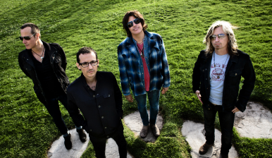
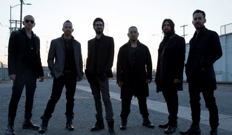

Chester Bennington
1976 - 2017
Who Was
Chester Bennington?
Chester Charles Bennington (March 20, 1976 - July 20, 2017) was an American singer, songwriter, and occasional actor. He was best known as the lead vocalist of Linkin Park, but was also the lead vocalist of the bands Grey Daze, Dead by Sunrise, and Stone Temple Pilots.

Career Timeline
Grey Daze

In 1993, Bennington became the vocalist to a local rock band called Gray Daze, where he managed to get musical recognition. The band recorded two albums; However, he left the band in 1998 due to creative differences with the members of the group. Sometime later, Chester Bennington met Jeff Blue, vice president of Zomba Music; who told him about auditions to be a member of the band, Linkin Park.
Dead By Sunrise
In 2005, Chester Bennington began an alternate project with Ryan Shuck, Amir Derakh, Brandon Belsky and Elias Andra. The project was called Dead By Sunrise. The band started to form while Chester Bennington was writing songs for Linkin Park. Bennington said in an interview, “I came up with a few songs that felt and sounded really good, but I knew they weren’t right stylistically for Linkin Park… So I decided to work on them on my own…”
Stone Temple Pilots
In May of 2013, at the Weenie Roast Concert of Kroq, Chester Bennington took the stage next to Stone Temple Pilots, becoming the new vocalist of the group. Together they played traditional songs by the San Diego band, and they also sang a new song called “Out of Time” which was the first single from the band’s record work. In the year 2015 Chester announced his retirement from the band because he was sacrificing time with Linkin Park.
Linkin Park
In 1999, Chester moved to Los Angeles, to try to enter Xero (Linkin Park's name at the time.) At his audition, he quickly attracted the attention of the band for his vocal quality, so he was accepted as a vocalist. After his arrival to the band, this changed name to Hybrid Theory, then to Linkin Park. From 2000 to 2017, the band released 7 studio albums and scored 11 number-one singles on the Billboard Alternative Songs chart. Chester was the lead vocalist up until his death in 2017.
Music Timeline
1997
In 1997, Grey Daze released their 2nd album, …No Sun Today. While none of the songs would not be as successful as Bennington's later work, one song called B12 was popular with local radio. According to his bandmate, Sean Dowdell, this was the first song Bennington ever wrote at age 12.
2000
In 2000, Linkin Park released their debut album, Hybrid Theory. This album was a major success and put Linkin Park on the road to becoming one of the biggest bands of the 2000s. Their biggest hit from the album, In The End, reached number 1 on billboard.
2007
In 2007, Linkin Park said goodbye to their nu-metal roots in place of a more alternative rock sound. Their 3rd album cycle was kicked off with What I've Done, a single that was eventually used for the first Transformer's movie soundtrack.
2009
In 2009, Bennington's side project, Dead By Sunrise, released their debut album, Out of the Ashes. Bennington participated in all aspects of creating the record, including programming and production. The album produced two singles titled Let Down and Crawl Back In.
2013
In 2013, Bennington stepped in as the lead singer of Stone Temple Pilots. He performed with the band on tour throughout the year, and together they debuted a new song called Out of Time. This track would be featured on a full length EP titled High Rise later that year.
2017
In May 2017, Linkin Park released their 7th studio album titled One More Light. For this project, the band switched up their sound to be more pop influenced, which polarized both fans and critics alike. After Bennington passed away two months later, the song One More Light was dedicated to his memory.
Personal Life
Throughout his life, Bennington struggled with trauma from sexual abuse as a child as well was substance abuse and depression. To comfort himself, he drew pictures and wrote poetry and songs. Bennington took an interest in music at a young age, citing the bands Depeche Mode and Stone Temple Pilots as his earliest inspirations. He even dreamed of becoming a member of Stone Temple Pilots — something he actually achieved later in life.
Bennington had six children in total. He had three children from previous relationships before 2005, and three children after his marriage to Talinda Bentley in 2006.
Bennington was a close friend of Chris Cornell. The friendship between them originally started in the mid-2000s, but it strengthened during the Projekt Revolution Tour when Bennington joined Cornell on stage to sing Hunger Strike, and then Cornell joined Bennington to sing Crawling. When Cornell passed away in early 2017, Bennington commented on Cornell’s death, stating that he could not imagine a world without Cornell in it.
On July 20, 2017, Bennington was found dead at his home in California. Bennington's death was ruled a suicide by hanging, however, he left no suicide note. Bennington's death occurred on what would have been Chris Cornell's 53rd birthday. Cornell's death was also ruled as suicide by hanging two months earlier. After Bennington's death, Linkin Park canceled the rest of their One More Light Tour and refunded tickets. His funeral was held on July 29 at South Coast Botanic Garden in Palos Verdes, California. In addition to his family members and close friends, many musicians who toured or played with Linkin Park also attended. The service also included a full stage for musical tributes.
Legacy
Linkin Park hosted a public tribute for Bennington in LA on October 27, 2017, titled Linkin Park and Friends: Celebrate Life in Honor of Chester Bennington. The event featured the band’s first performance following his death, along with performances from Blink-182, members of System of a Down, Korn, Avenged Sevenfold, Bring Me the Horizon, Yellowcard, and many others.
Chester Bennington is seen by many as one of the best vocalists of the 2000s. BBC’s Steve Holden called Bennington the “voice of a generation”, saying his voice was arguably Linkin Park’s greatest asset. Other musicians have also come out attributing Bennington as a huge inspiration for their own music. In an interview with Kerrang!, Oli Sykes, frontman to Bring Me The Horizon, said:
“Chester’s voice was a huge inspiration… He was someone I looked up to… He was such an iconic and unique singer. I don’t think anyone sounded like him before, and I don’t think anyone will ever again. That mix of melody, catchiness and aggression is something I wanted to aim for myself.”
During his lifetime, Bennington worked with Music For Relief, a charity organization that supports and provides aide to communities around the world affected by natural disasters. The ONE MORE LIGHT FUND is a is a current project set up by the organization with a mission of both supporting mothers and babies in Africa and bringing more attention to mental health.
After Bennington's death, his widow, Talinda, launched a campaign called 320 Changes Direction in honor of her husband to help break the stigma surrounding mental illness.
In case you or someone you know needs support, here are some resources:
Suicide Prevention Lifeline 1-800-273-TALK
Crisis Text Line; the free, nationwide, 24/7 text message service for people in crisis, is here to support. For support in the United States, text HELLO to 741741 or message on Facebook.
For support outside the US, find resources at
the International Suicide Hotline.